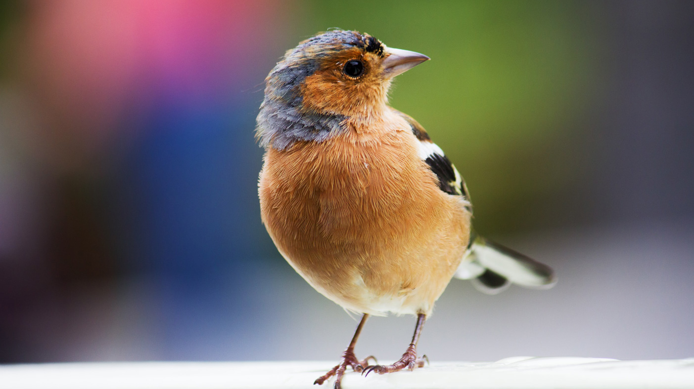

Design Challenge
What is the problem in need of solving?
Exploring overall impact I want to have, defining the key issues and starting the initial problem-solving stage by understanding what the solution needs to be. From here I can start to explore how to get to that solution.